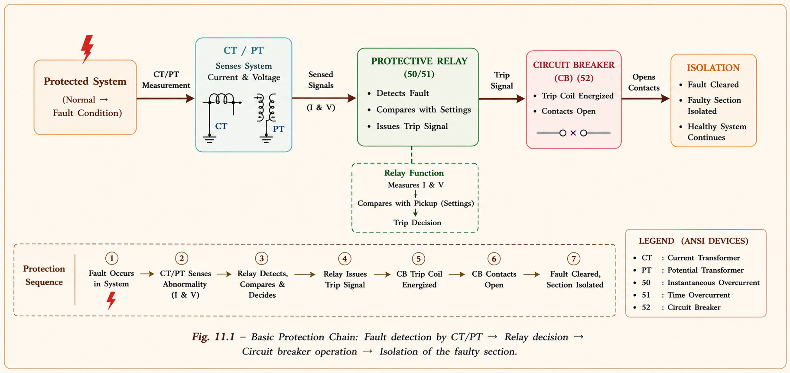
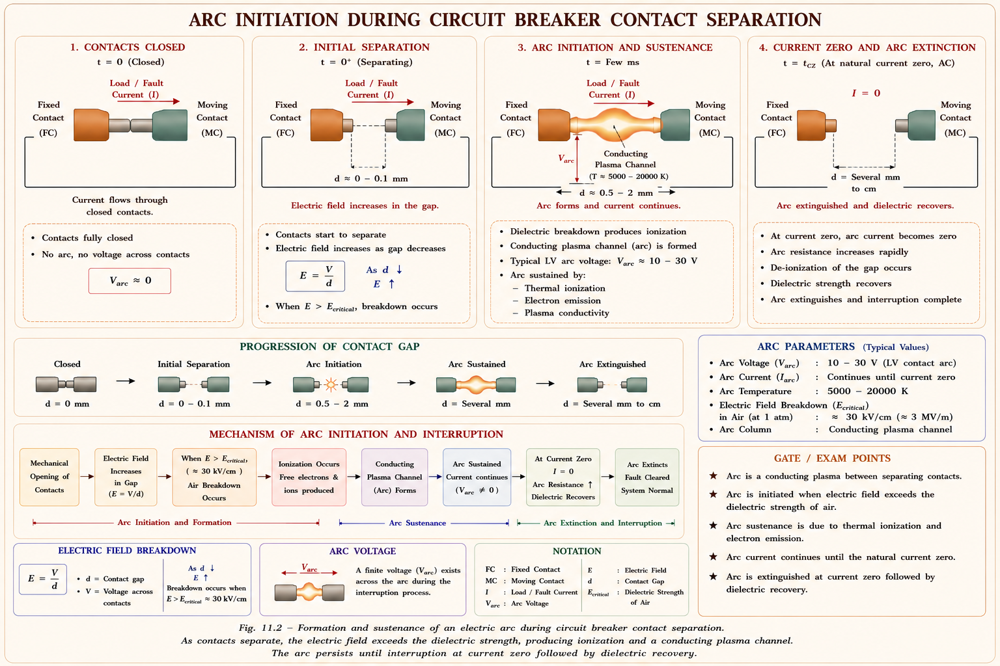
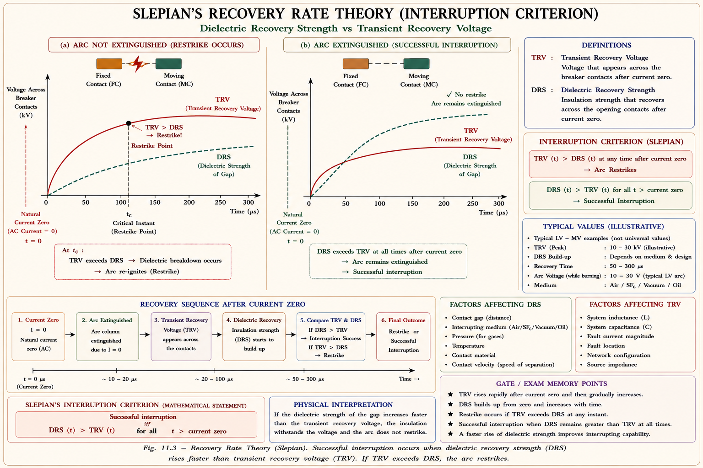
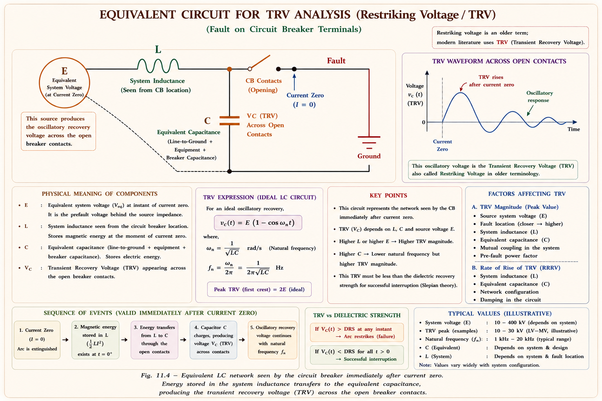
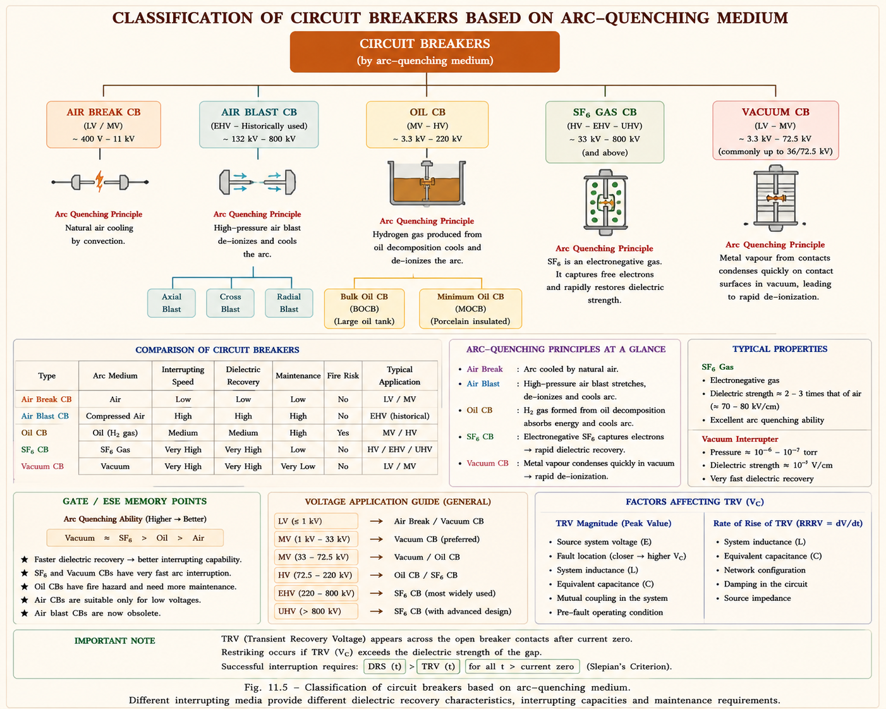

The guardian of the power grid — from arc initiation to modern SF₆ vacuum breakers. Master arc physics, interruption theories, ratings, and GATE-level numericals with intuitive derivations and inline SVG diagrams.
Imagine a highway with thousands of vehicles. A single accident can cause a chain reaction. Power systems are the same — a fault anywhere sends enormous currents through every line and machine connected to the same grid. Circuit breakers are the traffic police that isolate the accident and let the rest of the highway keep moving.
The entire protective switchgear of a power system is designed on the basis of fault analysis. When a fault occurs — a broken insulator, a tree falling on a line, or equipment failure — the fault current can be 2 to 10 times the full-load current. This surge is not restricted to the faulted section; it flows through every healthy section of the system too.[1]
The key components of the protection chain are:
Relay (senses abnormality) → sends trip signal → Circuit Breaker (isolates the faulty section) → healthy system continues to operate normally.
A relay is the brain — it senses abnormal operating conditions and issues a trip command. The circuit breaker is the muscle — it physically separates the contacts and interrupts the fault current. Together they form the primary protection system of any power network.

Power systems use four types of protective switching devices, each suited for a specific operating condition. Understanding their differences is critical for both GATE and IES examinations.[1]
| Device | Operating Condition | Breaking Capacity | Key Property |
|---|---|---|---|
| Fuse | Abnormal only (self-operated) | Rated current | Low melting point element; primary protection in distribution |
| Load Interrupter | Full-load conditions only | Full load capacity | Used for energy management, load shedding |
| Line Isolator | No-load only | Zero | Provides clearance; opened only after load interrupter operates |
| Circuit Breaker | No-load, full-load and abnormal | 3-ϕ short circuit MVA | Most versatile; replaces fuse + load interrupter |
The fuse element is made of a material with a low melting point (tin, lead, zinc) that is free from oxidation deterioration and low-cost. It operates on a simple principle: when the heat energy developed (\(I^2 R \cdot t\)) exceeds the thermal capacity of the element, it melts and disconnects the faulty section.
In a distribution system, the fuse is the primary protective device. In a substation, it serves as a backup protection device. Since it is self-operated (operates under abnormal conditions without external command), it cannot be used for routine switching.
Load Interrupter must operate first → then Line Isolator opens. Reversing this order will cause a destructive arc since the Line Isolator has zero breaking capacity.
A circuit breaker must perform four functions that no other switching device can handle simultaneously:[2]
From a protection standpoint, two characteristics define circuit breaker quality:
1. Opening Time (Tripping Time): Time from the instant of applying tripping power to the instant of main contact separation. Modern high-speed circuit breakers open in \(1\tfrac{1}{2}\) to 8 cycles (on a 50 Hz base, 1 cycle = 20 ms).
2. Arcing Time: Time from contact separation to arc extinction.
Faster fault clearing means less thermal damage to equipment, reduced voltage dips felt by other consumers, and lower mechanical stress on generators. High-speed breakers (1½ cycles) are used on EHV lines where stability margins are small.
When a circuit breaker separates its contacts under load, a plasma arc forms between the contacts. This arc is not a simple spark — it is a self-sustaining column of highly ionized gas that conducts current. Understanding arc initiation, maintenance, and extinction is the core of circuit breaker design.[1][2]
At the instant of contact separation \((t = 0^+)\), the gap \(\Delta x\) is extremely small — on the order of 0.1 μm for a 132 kV breaker. The voltage across the gap \(\Delta V\) is approximately 100 V in the initial instant.
This field of 1000 kV/cm is far greater than the dielectric strength of any medium between the contacts. Therefore, gap breakdown is inevitable at contact separation — the arc is initiated by field ionization, not thermal ionization.

Once contacts are fully separated (e.g. at t = 30 ms for a 1½-cycle breaker with 30 ms open time), the gap is approximately 1 cm. At 132 kV, the field gradient reduces to about 2.29 kV/cm — far below the dielectric strength of the medium.
So why does the arc persist? The answer is thermal ionization. The arc itself generates enormous heat, which keeps the gas column ionized. This is why simply increasing contact separation does not immediately extinguish the arc.
Arc initiation is by field ionization. Arc maintenance is by thermal ionization. These are two distinct mechanisms. The arc resistance is purely resistive and has a negative temperature coefficient — as temperature increases, \(R_{arc}\) decreases.
The arc is a column of ionized gases with the following key properties:
| Property | Behaviour | Engineering Significance |
|---|---|---|
| Conductance | ∝ free electrons; ∝ cross-section; ∝ 1/length | Longer arc → lower conductance → harder to maintain |
| Resistance | Highly non-linear; negative temp. coeff. | R decreases as temp rises — arc becomes more conductive |
| Electrical nature | Purely resistive | Varc and Iarc are in phase; arc pf = 1 |
| Arc voltage | Varc ≈ const (I×R ≈ const) | As I rises, R drops proportionally — V stays nearly constant |
There are two fundamentally different methods for extinguishing the arc:[1][3]
In this method, the resistance of the arc is increased progressively until the current falls to a value insufficient to maintain the arc. Think of it as "strangling" the arc.
Arc resistance can be increased by four physical means:
When current is interrupted, the magnetic energy \(\tfrac{1}{2}LI^2\) associated with the circuit converts to electrostatic energy — producing a high voltage transient across the breaker contacts. If this voltage exceeds the withstand capacity of the gap, the arc restrike occurs. Therefore, this method is not suitable for high current interruption and is used only for low-power AC and DC circuit breakers.
This method is applicable only to AC circuit breakers. In a 50 Hz system, the current waveform naturally passes through zero 100 times per second (twice per cycle). At each current zero, the arc plasma is at its minimum ionization state. If the circuit breaker can prevent re-ionization after current zero, the arc is extinguished.
Arc is extinguished when: Rate of rise of dielectric strength > Rate of rise of restriking voltage. If the gap recovers its insulating strength faster than the transient voltage can build up across it, the arc is permanently extinguished.
There are two theories explaining the current zero interruption process:

The voltage across the circuit breaker during the arcing period is called the arc voltage. Since the arc is purely resistive, \(V_{arc}\) and \(I_{arc}\) are in phase. Fault current is nearly zero-power-factor lagging, so arc power factor (≈1) and fault power factor (≈0 lagging) are very different.[2]
As \(I_{arc}\) increases → temperature rises → \(R_{arc}\) decreases → \(V_{arc} \approx\) constant
The instantaneous voltage at the instant of arc extinction is called the Active Recovery Voltage. This is the system voltage that appears across the breaker contacts immediately after the arc is extinguished. It depends on:
| Factor | Effect on Varv |
|---|---|
| Power factor of fault current (sin ϕ) | Varv is maximum when fault pf = 0 (purely inductive) |
| Armature reaction (K₁ ≤ 1) | Reduces effective Vm; K₁ accounts for demagnetization |
| First pole clearing factor (K₂) | Depends on fault type and system grounding — see table below |
where \(V_m\) = peak phase voltage, \(\phi\) = power factor angle of fault current
| Fault Type | LG | LL | LLG | LLL | LLLG |
|---|---|---|---|---|---|
| Grounded System | K₂ = 1 | K₂ = 1.5 | K₂ = 1 | K₂ = 1.5 | K₂ = 1 |
| Ungrounded System | — | K₂ = 1.5 | K₂ = 1.5 | K₂ = 1.5 | K₂ = 1.5 |
\(K_2 = \dfrac{\text{Voltage across first pole that clears the fault}}{\text{Voltage across C.B after all poles cleared}}\). For a 3-phase fault on an ungrounded system, the first pole to open carries 1.5 times the phase voltage — this is why K₂ = 1.5 is the critical design case.
Line value of active recovery voltage (for line-to-line quantities) requires multiplying the above by \(\sqrt{3}\).
The restriking voltage is the transient voltage that appears across the circuit breaker contacts at the instant of arc extinction. It is caused by the LC oscillation in the circuit and is more severe than the steady-state recovery voltage.[1][2]
Imagine stretching a spring and suddenly releasing it — the spring overshoots its rest position. Similarly, when the arc is extinguished, the circuit (which has inductance L and capacitance C) oscillates, and the voltage across the breaker overshoots the steady-state value — this overshoot is the restriking voltage.
When the arc is extinguished, the equivalent circuit is the system voltage \(E\) (active recovery voltage) driving an LC circuit (system inductance L and shunt capacitance C to ground).

The circuit equation after arc extinction:
Taking Laplace transform with initial conditions \(V_C(0)=0\) and solving:
"Double E oscillates" — The peak restriking voltage is always twice the active recovery voltage (peak). The waveform is a \(1 - \cos\) shape, not a sine. RRRV is maximum at \(t = 0\) and equals \(\omega_n E_{peak}\).
When a circuit breaker interrupts a low inductive current (e.g., shunt reactor or magnetising current of a transformer), the current may be forced to zero before its natural zero crossing. This abrupt interruption is called current chopping.[2]
When current is abruptly chopped, all the magnetic energy stored in the inductance (\(\tfrac{1}{2}LI_{ch}^2\)) instantaneously converts to electrostatic energy (\(\tfrac{1}{2}CV^2\)). The resulting overvoltage can be extremely high and may cause insulation failure.
Current chopping is most severe when:
To prevent insulation failure, the prospective voltage must be less than the withstand capacity (standing capacity) of the circuit breaker. Resistance switching (Section 7.9) is the cure.
Resistance switching involves connecting a resistor in parallel with the circuit breaker contacts during the opening operation. This resistor serves a dual purpose: it damps restriking voltage oscillations and prevents current chopping overvoltages.[1][2]
With resistance switching, the circuit becomes a series RLC. For no transient oscillation (critical or over damping), all roots of the characteristic equation must be real. This requires:
| Damping Condition | Value of R | Behaviour |
|---|---|---|
| Critical Damping | \(R = \tfrac{1}{2}\sqrt{L/C}\) | No oscillation, fastest return to steady state |
| Over Damping | \(R < \tfrac{1}{2}\sqrt{L/C}\) | No oscillation, but slower response |
| Under Damping | \(R > \tfrac{1}{2}\sqrt{L/C}\) | Oscillations present — restriking possible |
| Un-damped | \(R = \infty\) (no resistor) | Full undamped oscillation, maximum RRRV |
The damped frequency of oscillation with resistance switching:
The breaking capacity of a circuit breaker is its ability to interrupt fault current. Symmetrical breaking capacity is defined as the rms value of the AC component of fault current that the CB is capable of breaking.[1][4]
This is the rms value of the total current (AC + DC offset components) that the CB can break. The DC offset is present during the transient period of a fault.
The making capacity is the ability to close (make) the CB onto a short circuit. It is defined as the peak value of the total current (including DC offset) in the first cycle.
Making = 2.55 × SBC (peak value, first cycle, worst DC offset). Asymmetrical Breaking = x × SBC where x = 1.6 for first cycle. Making capacity is always larger than asymmetrical breaking capacity because making occurs at the absolute worst instant.
| Rating | Definition | Notes |
|---|---|---|
| Short Time Current | Max current CB can carry for short period without damage | Based on thermal + mechanical considerations |
| Rated Voltage | L-L rms; generally more than nominal system voltage | e.g. 11 kV system → 12 kV rated |
| Rated Current | rms of current under normal load operation | Continuous current rating |
| Rated Frequency | System frequency (50 Hz in India) | — |
| No. of Operations | Specified on nameplate; after which CB needs maintenance | 1 operation = 1 break + 1 make |
| Operating Duty | B-3-MB-3-MB (no auto-reclose); B-D_t-MB (auto-reclose) | D_t ≈ 300 ms dead time |
Circuit breakers are classified by the arc quenching medium (insulating medium between contacts). Solid insulating materials are never used for arc quenching — only fluid media (gas, oil, vacuum).[1][3][4]

| Property | Air Break | Air Blast | Oil CB | SF₆ | Vacuum |
|---|---|---|---|---|---|
| Arc Quenching Medium | Atm. air | Compressed air (20–30 kg/cm²) | Transformer oil | SF₆ at 5 kg/cm² | High vacuum (10⁻⁵ torr) |
| Dielectric Strength | 30 kV/cm | High (compressed) | Good insulator | 80 kV/cm | 10⁷ V/cm (10000 kV/cm) |
| Voltage Range | 400V–11kV | 66kV–1100kV | 3.3kV–220kV | 3.3kV–800kV | 3.3kV–66kV |
| Breaking Capacity | 5–750 MVA | 2500–60000 MVA | 150–25000 MVA | 1000–50000 MVA | 1000–50000 MVA |
| Fire Hazard | None | None | High (oil flammable) | None | None |
| Maintenance | Contact replacement | Compressor upkeep | Regular oil change | Minimum lubrication | Minimum |
| Environment | Emits hot ionised air | Emits hot air | Humidity affects oil | Fully sealed | Sealed — no effect |
| Size | Medium | Large | Quite large | Smaller | Smallest |
SF₆ gas has an electronegative property — it attracts free electrons from the arc plasma. The electrons attach to SF₆ molecules to form heavy, slow-moving negative ions, which reduces the conductivity of the arc plasma and accelerates deionisation. This is why SF₆ breaks the arc at current zero with exceptional efficiency.
Vacuum means zero pressure (ideally 0 torr or '0' mm Hg). In practice, a high vacuum of \(10^{-5}\) torr is created. The dielectric strength of vacuum is \(10^7\) V/cm = 10,000 kV/cm — extraordinarily high compared to any other medium.
When contacts separate in vacuum, a small amount of metal vapour is released due to mechanical friction. At current zero, electromagnetic forces become zero and the metal vapour falls to the bottom of the chamber under gravity — no gaseous atoms remain to sustain the arc. The arc is interrupted at the first current zero.
Operating voltage is limited to 66 kV. Above 66 kV, creating and maintaining high vacuum becomes technically difficult and economically unviable. SF₆ is preferred above 66 kV.
| Rated Voltage | Preferred CB Type | Why |
|---|---|---|
| Below 1 kV | Air Break, Vacuum, or SF₆ | Vacuum preferred for fast, reliable operation |
| 1 kV – 132 kV | Min. Oil, SF₆, Air Blast | SF₆ preferred for reliability and zero fire risk |
| 132 kV – 220 kV | SF₆ preferred | High breaking capacity, sealed — no maintenance |
| 400 kV – 800 kV | SF₆ or Air Blast CB | SF₆ preferred; Air Blast for highest voltages |
Given: V_LL = 11 kV, ϕ = 60°, K₁ = 0.95 (voltage reduced by 5%), K₂ = 1.5 (LL fault on grounded system)
Given: SBC = 200 MVA, V_LL = 33 kV
Fault current = 2000 A (rms), maximum fault current = \(2000\sqrt{2}\) A
This enormous overvoltage (2 MV for a 33 kV system!) illustrates why current chopping must be avoided — it can destroy transformer insulation catastrophically.
🟢 HIGH Symmetrical & asymmetrical breaking capacity calculations. Making capacity = 2.55 × SBC.
🟢 HIGH Restriking voltage derivation: \(V_C(t) = E(1-\cos\omega_n t)\), maximum = 2E_peak, RRRV = ω_n E_peak.
🟢 HIGH K₂ (first pole clearing factor) table — grounded vs ungrounded, fault type.
🟡 MEDIUM Critical resistance for resistance switching: \(R \leq \tfrac{1}{2}\sqrt{L/C}\).
🟡 MEDIUM SF₆ properties: dielectric strength 80 kV/cm, electronegative, voltage range.
🔴 LOW Air blast CB subtypes (axial, cross, radial). Line isolator breaking capacity = zero.
A circuit breaker has a symmetrical breaking capacity of 1000 MVA at 33 kV. Its making capacity and asymmetrical breaking capacity are respectively:
Key: Making = 2.55 × SBC (peak, includes DC offset). Asymmetrical = 1.6 × SBC (rms total, first cycle).
When a circuit breaker interrupts a fault, the restriking voltage is given by \(V_C(t) = E(1-\cos\omega_n t)\). The maximum value of the restriking voltage is:
Derivation: \(V_{max} = E(1-\cos\pi) = E(1-(-1)) = 2E\). This is 2× the active recovery voltage peak.
In a vacuum circuit breaker, the arc is interrupted at:
Reason: Metal vapour produced at contact separation falls under gravity at current zero. No medium exists for arc re-striking.
For a circuit with L = 10 mH and C = 0.04 μF connected across a circuit breaker, the value of resistance for critical damping (no oscillation) is:
Fuse: self-operated, low melting point. Load interrupter: full-load only. Isolator: no-load, zero breaking. CB: all conditions. Sequence: interrupter first, then isolator.
Initiation: field ionization at \(\Delta x = 0.1 \mu\text{m}\). Maintenance: thermal ionization. Properties: resistive, negative temp coeff. \(V_{arc} \approx\) constant as I rises.
Slepain (Recovery Rate): dielectric recovery rate vs restriking voltage rate. Cassie (Energy Balance): heat dissipation rate vs heat generation rate.
\(V_C(t) = E(1-\cos\omega_nt)\). Max = \(2E_{peak}\). \(RRRV_{max} = \omega_n E_{peak}\). \(f_n = 1/2\pi\sqrt{LC}\). Higher L,C \(\rightarrow\) lower \(f_n \rightarrow\) lower RRRV.
SBC in MVA = \(\sqrt{3} V_{LL} \times I_{sy}\). Making = \(2.55 \times\) SBC. Asymmetrical = \(1.6 \times\) SBC. Default = SBC (symmetrical). \(K_2 = 1.5\) for LL fault.
Below 1 kV: air break. Up to 66 kV: vacuum preferred. Up to 220 kV: SF₆ preferred. EHV (400–1100 kV): SF₆ or air blast. SF₆ = \(80 \text{ kV/cm}\); vacuum = \(10^7 \text{ V/cm}\).
Protective Relays — Overcurrent relays (IDMT, DMT), distance relays (impedance, MHO, reactance), differential protection, earth fault protection, feeder protection, and Buchholz relay. Complete GATE & IES coverage with numericals and relay coordination problems.
All technical explanations, derivations, SVG diagrams, and examples are original to Aarova AI, derived from the following standard references. No content is reproduced from ACE Academy materials.